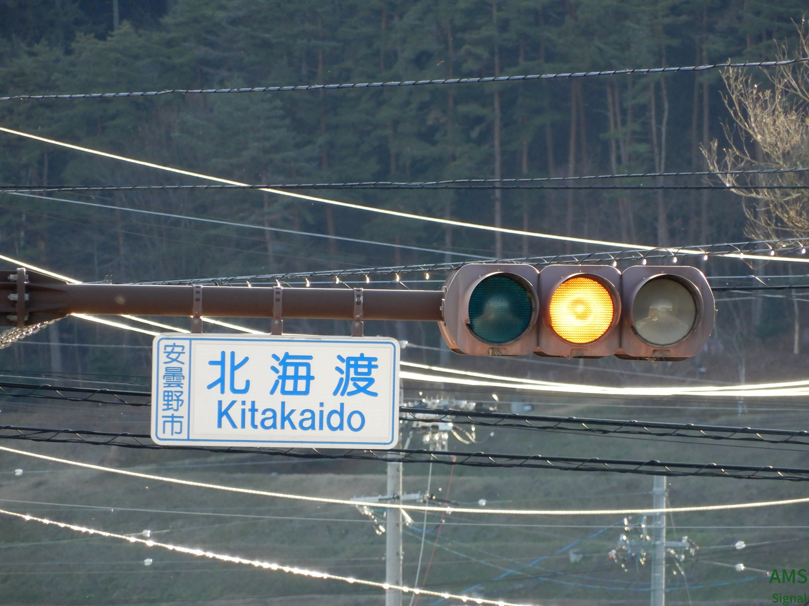
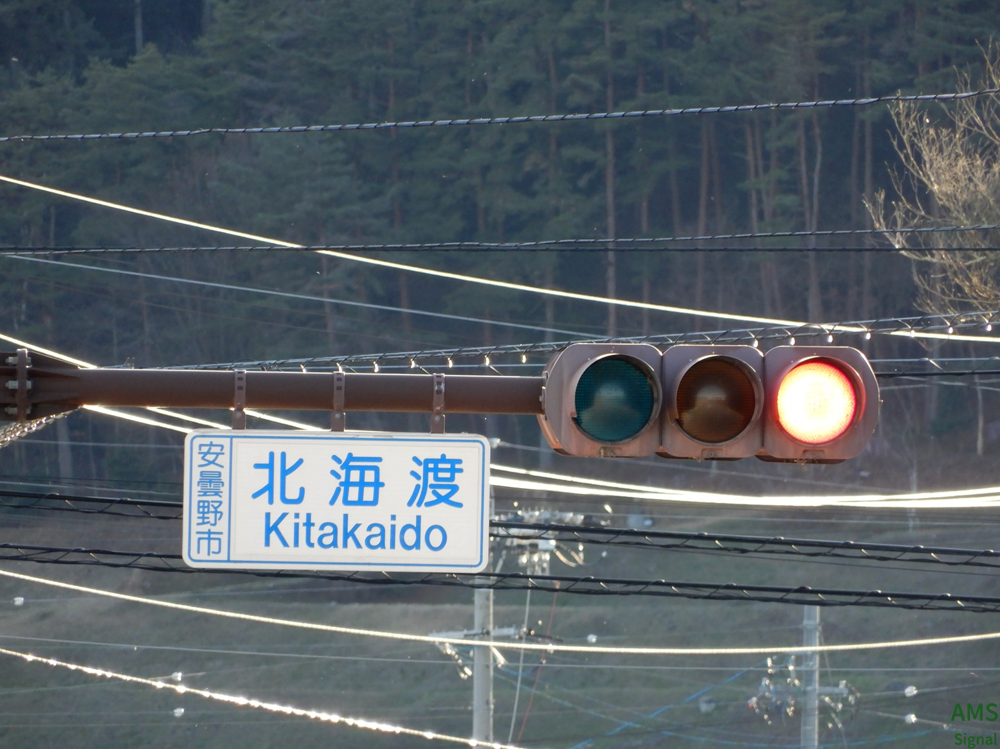
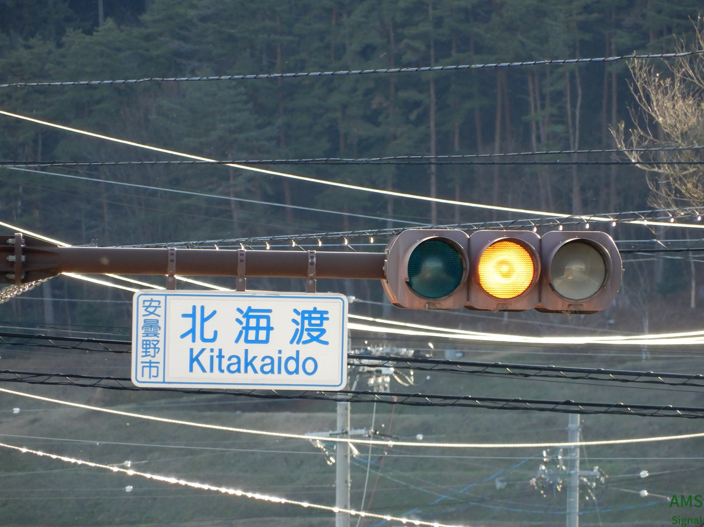
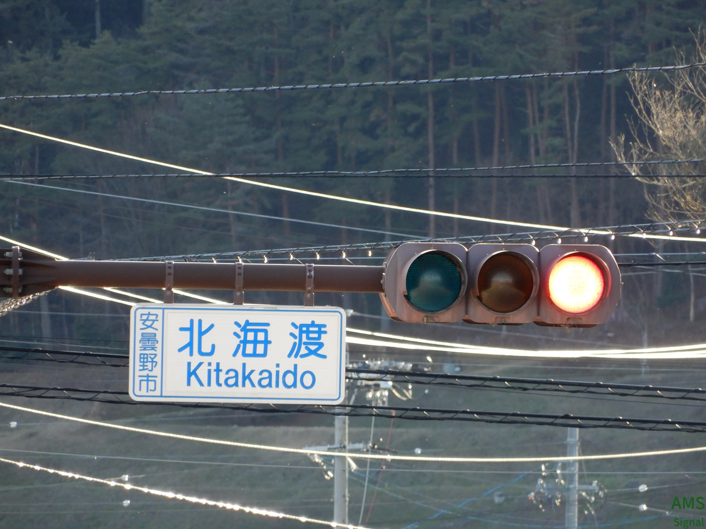
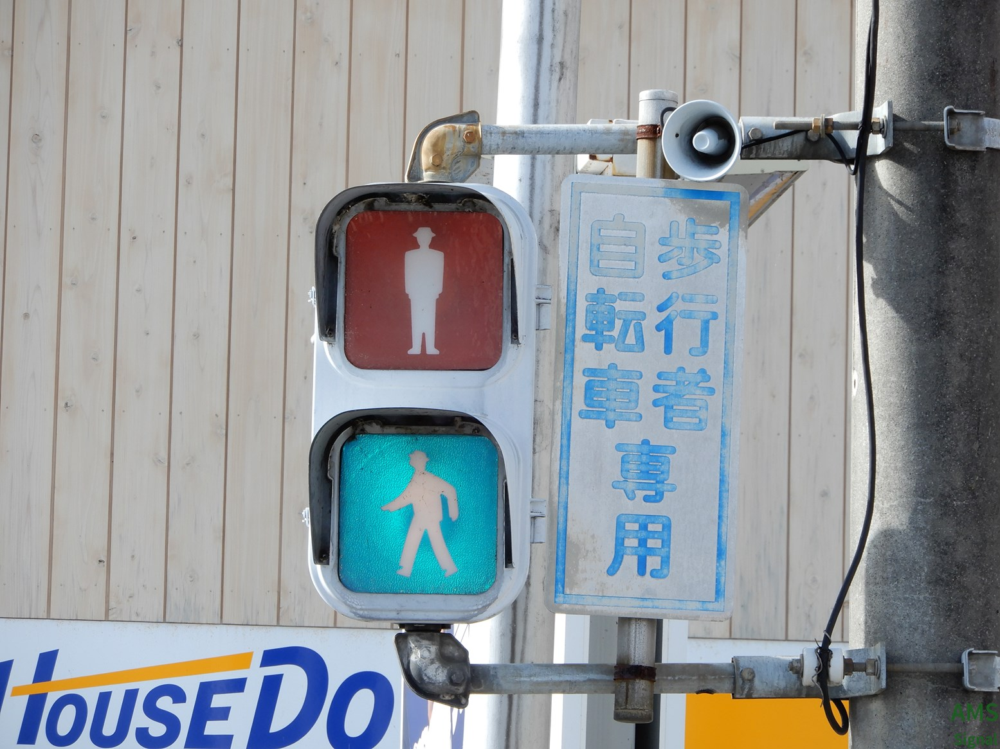
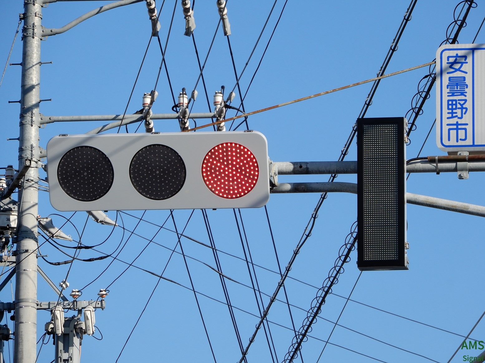
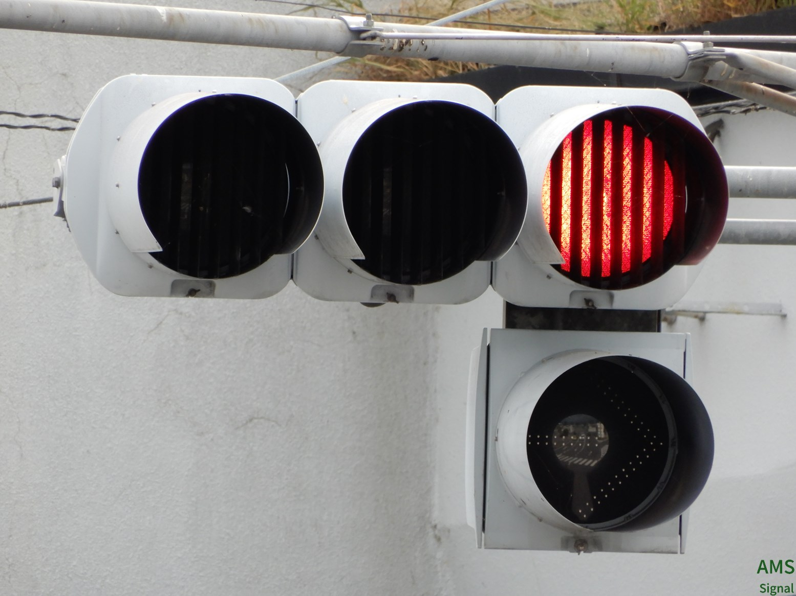
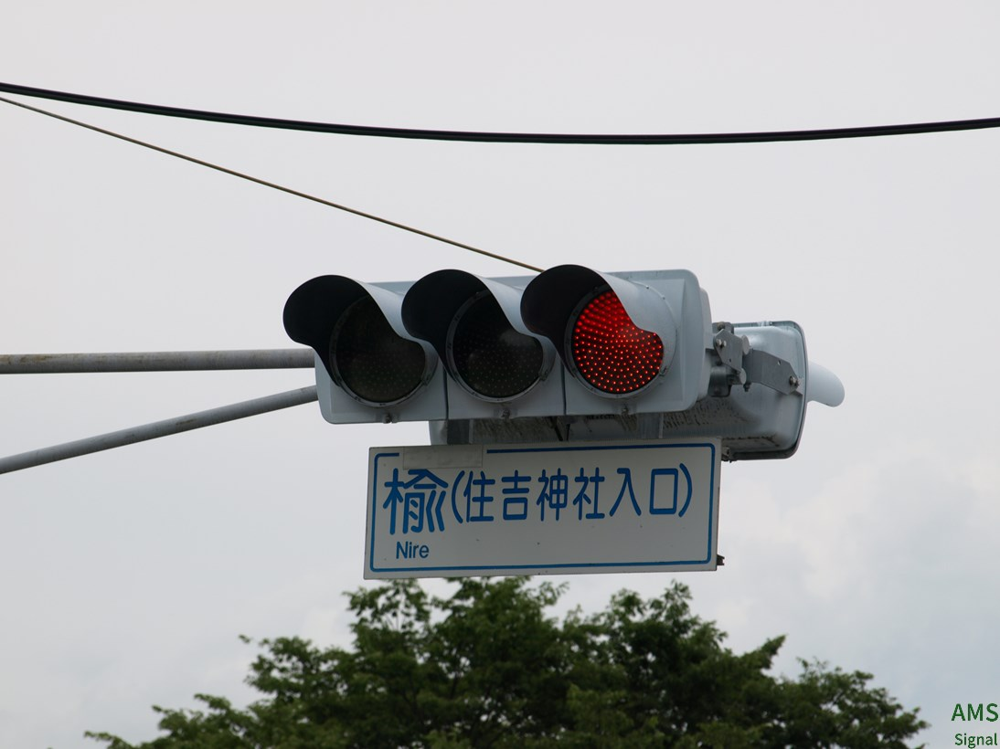
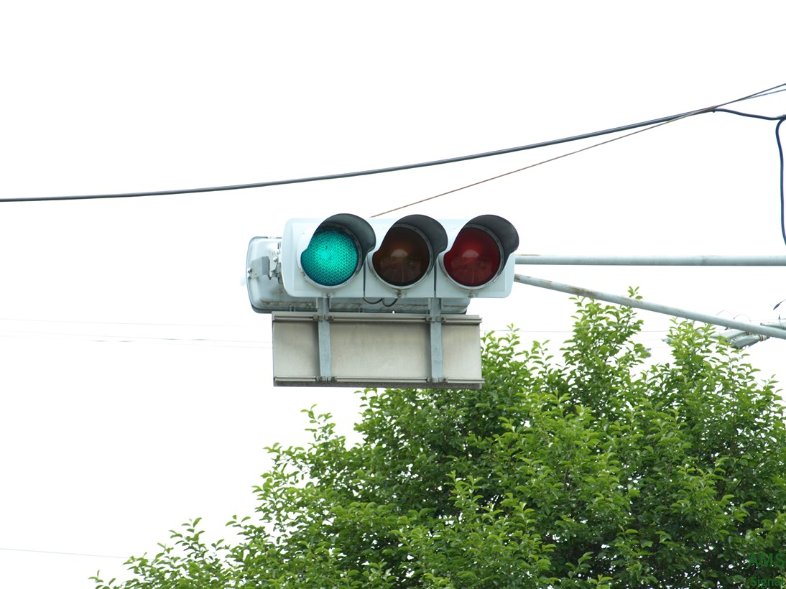
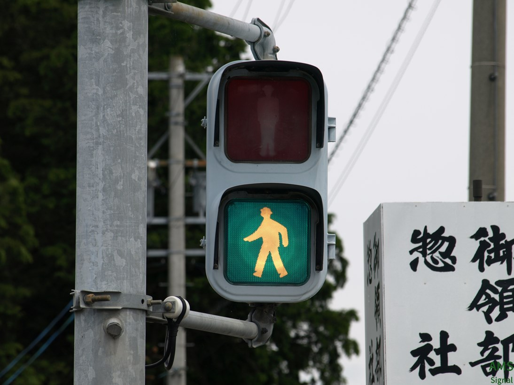

安曇野市
  
 
北海渡 2024年3月に更新済み
長野県で結構見かける「赤だけLED」灯器です。安曇野市では「光橋東」交差点が有名ですが実はひっそりこの交差点にも設置されています。

豊科駅入口
長野県唯一のガラスレンズおにぎりが設置されています。また、そのうちの1台は第3世代おにぎりがガラスレンズに換装された擬態初代になっています。

下鳥羽
白色LEDの「感知中」電光標識があります。長野県内でもまだ珍しいと思われます。

堀金
左右視覚制限バズーカです。交差点が5差路でそのうちの2本がV字に交わるため設置されています。

楡（住吉神社入口）
電球おまるとLEDおまるの組み合わせがあります。
歩行者用は小糸おにぎりです。